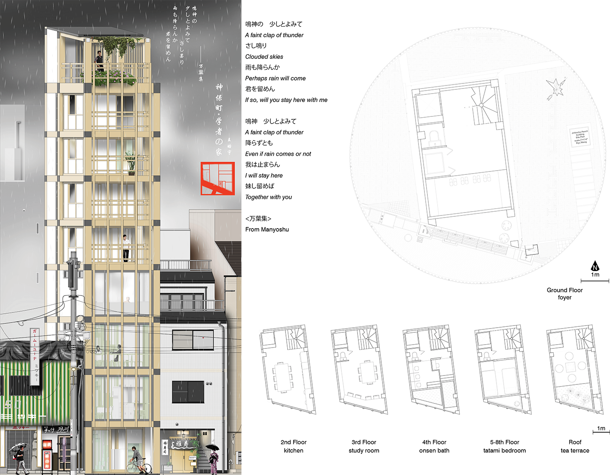
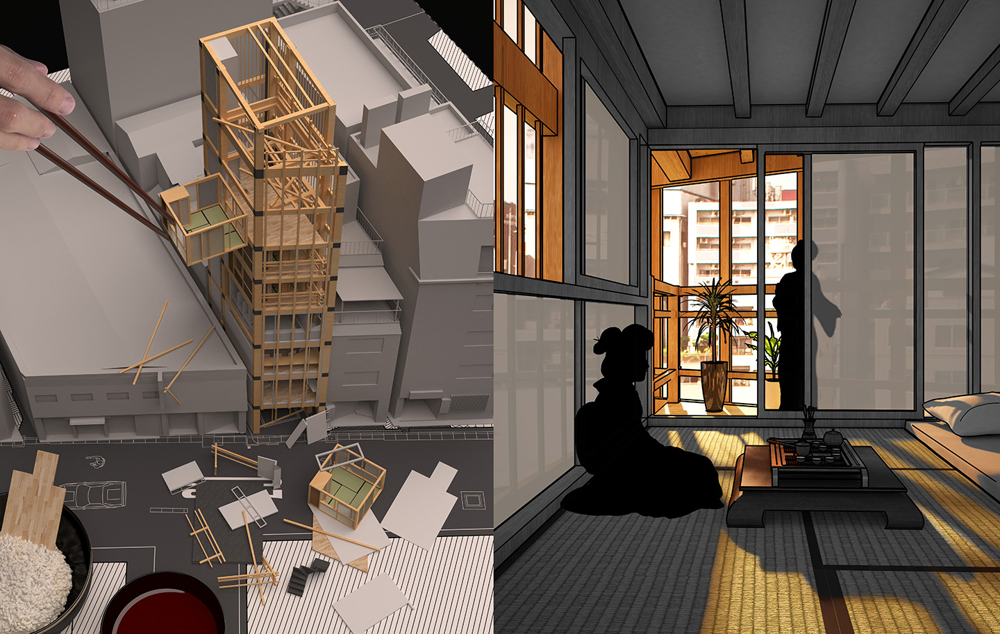
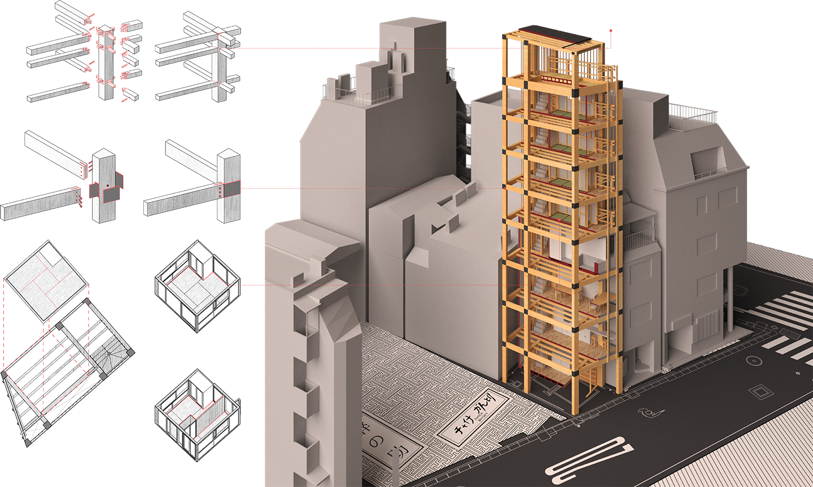
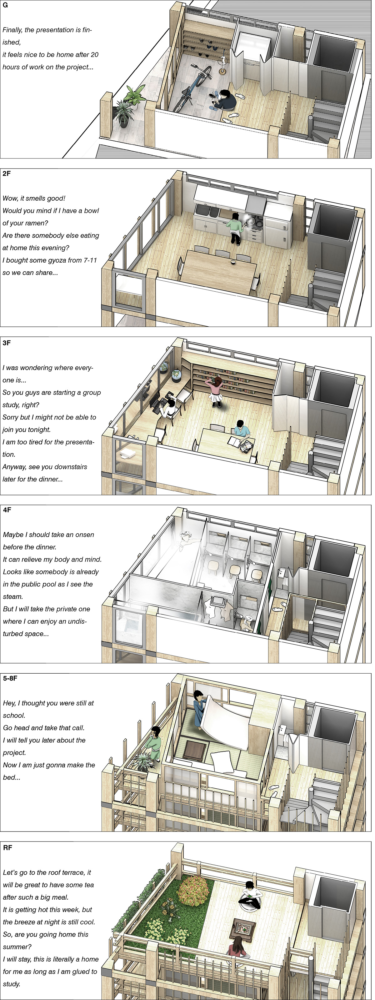

CLASSICS IN THE SHELL
While mitigating the pressure of rent, this proposal encourages a lifestyle in which like-minded scholars learn from each other by sharing pieces of their residential experience in a harmonious atmosphere of collective living and studying. In response to Tokyo Environmental Bureau's suggestion of using locally produced timber-based material, the project employs a timber-joint structural system which has a profound history in Japanese architectural craft and has been adapted into contemporary construction methods. The limited scale of the project allows me to explore alternative forms of classic Japanese structures, such as the tatami room moduling, nailless carpentry, and anti-earthquake joint works. The design aims to bring back a touch of classic over the loneliness of contemporary pencil building.



